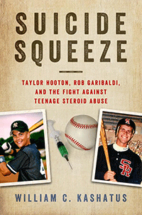

<HTML><head>
<meta name='robots' content='noindex,nofollow' /><script> (function(i,s,o,g,r,a,m){i['GoogleAnalyticsObject']=r;i[r]=i[r]||function(){  (i[r].q=i[r].q||[]).push(arguments)},i[r].l=1*new Date();a=s.createElement(o),  m=s.getElementsByTagName(o)[0];a.async=1;a.src=g;m.parentNode.insertBefore(a,m)   })(window,document,'script','//www.google-analytics.com/analytics.js','ga');   ga('create', 'UA-43183130-1', 'temple.edu');   ga('send', 'pageview'); </script><title>William C. Kashatus: Suicide Squeeze - Print</TITLE><link rel="stylesheet" href="../general.css" type="text/css"><SCRIPT LANGUAGE = JAVASCRIPT></SCRIPT></HEAD><BODY LINK="#3152A5" VLINK="#3152A5" ALINK=Gray BGCOLOR=White><CENTER><P CLASS=intro><br>A heartbreaking story of steroids-related suicides by two promising young amateur baseball players that mobilized Major League Baseball's campaign against steroid use<br><br></P></CENTER><br>&nbsp;<!--none//--><Table width="100%" border=0 cellspacing=5><tr><td width="175" align="center"></td><td><h1 class = "booktitle">Suicide Squeeze</h1> <h1 class = "subtitle">Taylor Hooton, Rob Garibaldi, and the Fight against Teenage Steroid Abuse</h1><h3 class="author">William C. Kashatus</h3><p class="info"><p class="info">cloth EAN:  978-1-4399-1438-0 (ISBN:1-4399-1438-9)</br>$35.00, Jan 17, <font color=#990033>Available</font><br><p class="info">Electronic Book EAN: 978-1-4399-1440-3 (ISBN:1-4399-1440-0)</br>$35.00, Jan 17, <font color=#990033>Available</font><br><p class="info">256 pp, 6 x  9, 1&nbsp;figures 1 figs., 35 halftones</p></td></tr></table></P></td></tr></table><BR>
	
	<p class="award"><P><font color="#996633"><p class="award"><P><font color="#996633">Outstanding Academic Title, <em>Choice</em>, 2017</font></P></font></P>

<BLOCKQUOTE><p>"Suicide Squeeze<i> sends an important message to baseball's youth and their parents. This book is about much more than the record-breaking, money, and ethics of the steroid era. Kashatus reveals how two families endured great tragedy and fought back&#8212;not only to change the game, but also to save a generation</i>."<br><b>&#8212;Johnny Bench,</b> Hall of Fame catcher for the Cincinnati Reds, 1967&#8211;1983<br></BLOCKQUOTE><P><p>Appearance- and performance-enhancing drugs&#8212;specifically, anabolic steroids (APEDs)&#8212;provide a tempting competitive advantage for amateur baseball players. But this shortcut can exact a fatal cost on talented athletes. In his urgent book <i>Suicide Squeeze</i>, William Kashatus chronicles the experiences of Taylor Hooton and Rob Garibaldi, two promising high school baseball players who abused APEDs in the hopes of attracting professional scouts and Division I recruiters. However, as a result of their steroid abuse, they ended up taking their own lives.<br><p>In <i>Suicide Squeeze</i>&#8212;named for the high-risk play in baseball to steal home&#8212;Kashatus identifies the symptoms and dangers of steroid use among teens. Using archival research and interviews with the Hooton and Garibaldi families, he explores the lives and deaths of these two troubled young men, the impact of their suicides on Major League Baseball, and the ongoing fight against adolescent APED use that their parents have been waging.<br><p>A passionate appeal to prevent additional senseless deaths by athletes, <i>Suicide Squeeze</i> makes an important contribution to debates on youth and sports and on public policy.<br>

<P CLASS="top"><A HREF="#top">BACK TO TOP</A></P>
<P><h2  class="inpageheading"><A NAME="excerpt"></a>Excerpt</h2><p>

<A HREF="http://www.temple.edu/tempress/chapters_2400/2434_ch1.pdf"><p>
Read Chapter 1 (pdf). </A><br>

<P CLASS="top"><A HREF="#top">BACK TO TOP</A></P></P>

<P><h2  class="inpageheading"><A NAME="reviews"></a>Reviews</h2>

<p>"<i>The 2005 Congressional Hearing on Steroids in Baseball was the catalyst for Major League Baseball to implement the nation's toughest drug-testing program in professional sports. But what captured my attention most were the moving testimonies of Don Hooton and Denise Garibaldi, parents of sons who had turned to anabolic steroid use to achieve their ambitions as baseball players. William Kashatus's integration of the tragic stories of Taylor Hooton and Rob Garibaldi with the most recent research on appearance- and performance-enhancing drugs appeals to both our hearts and our minds. </i>Suicide Squeeze<i> is a timely and important book for parents, coaches, teachers, and everyone who cares about our nation's youth.</i>"<br>&#8212;<b>George J. Mitchell</b>, U.S. Senator from Maine, 1980&#8211;1995, and author of <i>Report to the Commissioner of Baseball of an Independent Investigation into the Illegal Use of Steroids and Other Performance Enhancing Substances by Players in Major League Baseball</i><br>

<p><i>"</i>Suicide Squeeze<i> tells the compelling stories of Taylor Hooton and Rob Garibaldi&#8212;not only the tragic circumstances surrounding their deaths but also how they inspired Major League Baseball to join the fight against the use of steroids and other performance-enhancing substances among our youth. Together with the Hooton and Garibaldi families, Bill Kashatus has succeeded in putting a human face on this pressing national health issue.</i>"<br>&#8212;<b>Allan H. "Bud" Selig</b>, Commissioner of Baseball, 1992&#8211;2015<br>

<p><i>"</i>Suicide Squeeze<i> is a chilling account of undetected teenage steroid abuse that subjected two families to the greatest pain and horror any parent can imagine. It is a must-read for parents to fully understand that teenage steroid abuse is not limited to the athletes in the headlines.</i>"<br>&#8212;<b>Stephen Keener</b>, President and CEO, Little League International<br>

<p>"<i>The word gets tossed around a lot these days in political discourse, but for a baseball read that truly is 'chilling' turn to William C. Kashatus' </i>Suicide Squeeze <i>, an examination of the very serious problem of steroid abuse by teenage ballplayers and other young athletes. To put a tragic face on this national health issue the author tells the stories of two young steroid abusers, one a high school baseball player named Taylor Hooton, and the second a college player named Rob Garibaldi; both of whom committed suicide.... (A)nyone who is a parent or coach of young ballplayers and anyone who cares about them should read this book carefully. It amounts to an irrefutable warning which must not be ignored."<br/>&#8212;</i><b><i>Spitball Magazine</i></b><br>
	
<p><i>"</i>Suicide Squeeze<i> is the saddest sports book of the year and perhaps the most important.... Kashatus focuses on the tragic story of two teenagers who seemed like can't-miss prospects.... [who] lost everything, including their lives, with the risky and reckless use of performance-enhanding drugs.... This book needs to be read by every Little League, high school and college baseball coach around the country as well as the parents of millions of young athletes."</i><br>&#8212;<b><i>StarTribune</i></b>
	

	
<p><i>"Kashatus, a historian, educator, and amateur baseball coach, investigates the tragic stories of two extremely talented young male student-athletes, Taylor Hooton and Rob Garibaldi, who abused anabolic steroids, supplements, and other appearance and performance-enhancing drugs (APEDs) to get bigger and stronger, and become better baseball players.... Kashatus thoroughly reviews student-use surveys, testing issues, and signs and symptoms of APED use and dependence, and makes important recommendations for parents, school administrators, legislators, and law enforcement. This work is strongly recommended for an array of readers. Summing Up: Highly recommended."</i><br>&#8212;<b><i>Choice</i></b>
		
		
</p>
	
	
<P CLASS="top"><A HREF="#top">BACK TO TOP</A></P></b></p>

<p><h2 class="inpageheading"><A NAME="contents"></a>
Contents</h2><P><SPAN STYLE="font-family: 'Verdana';font-size: 13px;" >
Preface<BR>
List of Abbreviations<BR><BR>
1. Confronting Baseball&rsquo;s Fallen Heroes<BR>
2. For Love of the Game and Sons<BR>
3. &quot;You Need to Get Bigger&quot;<BR>
4. &quot;Mom, Come Look at My Guns!&quot;<BR>
5. &quot;It&rsquo;s Just a Big Lie!&quot;<BR>
6. &quot;Only God Can Hold Me Now&quot;<BR>
7. USC's Baseball &quot;Family&quot;<BR>
8. Fighting Back<BR>
9. Losing a Son, Rebuilding a Family<BR><BR>
Afterword<BR>
Acknowledgments<BR>
Taylor Hooton Foundation<BR>
Notes<BR>
Selected Bibliography<BR>
Index</SPAN></P>

<P CLASS="top"><A HREF="#top">BACK TO TOP</A></P></p>

<P><H2  class="inpageheading"><A NAME="author bio"></a>About the Author(s)</H2><p><b>William C. Kashatus </b>is a historian, a longtime educator, and an amateur baseball coach. A regular contributor to the<i> Philadelphia Inquirer, </i>he is also the author of several books on baseball, including <i>Jackie and Campy: The Untold Story of Their Rocky Relationship and the Breaking of Baseball's Color Line.</i><br>

<P CLASS="top"><A HREF="#top">BACK TO TOP</A></P></P></P>

<P><h2  class="inpageheading"><A NAME="subjects"></a>Subject Categories</h2>
<P><A HREF="/tempress/general.html" TARGET="_top">General Interest</a><BR>
<P><A HREF="/tempress/sports.html" TARGET="_top">Sports</a><BR>
<P><A HREF="/tempress/youth.html" TARGET="_top">Youth Studies</a></P></P></P><P></P>

<P CLASS="top"><A HREF="#top">BACK TO TOP</A></P></td><td width=2%>&nbsp;</td><td width=5>&nbsp;</td></tr></table><BR>
<font face="Arial" size="1"><a href="copyright.html" OnMouseOver="window.status='Web Copyright Policy';return true;" OnMouseOut="window.status=''" TITLE="Web Copyright Policy">&copy;</a> 2017 <a href="http://www.temple.edu" target="new" OnMouseOver="window.status='Link to Temple University home page';return true;" OnMouseOut="window.status=''" TITLE="Link to Temple University home page">Temple University</a>. All Rights Reserved. This page: http://www.temple.edu/tempress/titles/2434_reg.html</font></BODY></HTML>    
